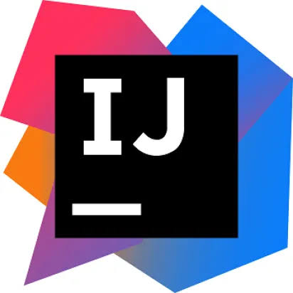

IntelliJ IDEA

El IDE de Referencia para el Ecosistema JVM
IntelliJ IDEA es un entorno de desarrollo integrado desarrollado por la compañía JetBrains.
Es considerado el estándar de la industria corporativa global para el desarrollo en lenguajes basados en la Máquina Virtual de Java (JVM),
tales como Java, Kotlin, Scala y Groovy.
Puntos Fuertes de la Plataforma
- Análisis Estático Profundo: Detección instantánea de errores, advertencias de optimización y fugas de recursos antes de compilar.
- Refactorización Segura: Renombramiento inteligente de variables, extracción de métodos e interfaces sin romper la integridad del proyecto.
- Integración con Herramientas de Construcción: Soporte automatizado para Maven, Gradle y sistemas de pruebas unitarias como JUnit.
- Depurador Avanzado: Análisis paso a paso en memoria, evaluación de expresiones en tiempo de ejecución y monitoreo de subprocesos.
Versiones: Community Edition (código abierto) y Ultimate Edition (empresarial).
⬅ Regresar